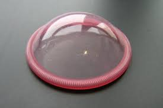

Sobre o Documentário
O documentário sobre métodos contraceptivos é uma poderosa ferramenta educacional que lança luz sobre a importância da saúde reprodutiva. Ao explorar diversas abordagens contraceptivas.
Ele oferece informações valiosas para homens e mulheres de todas as idades. Este documentário esclarece mitos e equívocos comuns, promovendo uma compreensão mais abrangente sobre o tema.
Exemplos de Métodos Contraceptivos
-
Preservativo
O preservativo, também chamado de camisinha, é um método contraceptivo e de prevenção de DSTs. Feito de látex ou poliuretano, é colocado no pênis antes da relação sexual para evitar a gravidez não planejada e reduzir riscos de infecções, sendo uma opção simples e eficaz.
-
Diafragma
O diafragma é um método contraceptivo que consiste em um dispositivo de borracha ou silicone, inserido na vagina antes da relação sexual para bloquear o acesso dos espermatozoides ao colo do útero, prevenindo a gravidez. Requer aplicação adequada e uso de espermicida para melhor eficácia.
-
Adesivo
O adesivo contraceptivo é um método de controle de natalidade em forma de adesivo, colocado na pele para liberar hormônios que inibem a ovulação e prevenem a gravidez. É uma opção prática e eficaz quando usado conforme as instruções, sendo trocado semanalmente.
Está na hora de você assistir o Documentário
Aperte no botão abaixo para ir para até página do documentário e assista sem moderação :)
Assistir